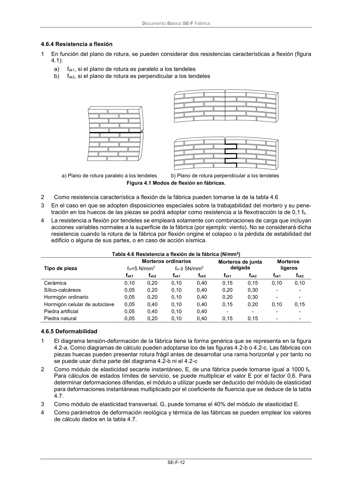
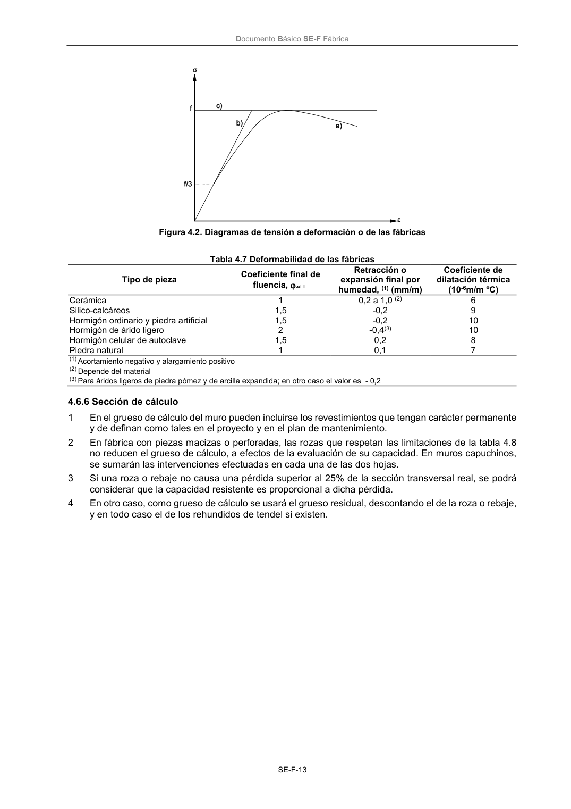

DB-SE-F Fábrica · edición 2019-12-20 · capa oficial
Documento DB-SE-F-oficial · SHA-256 del PDF e3e0805c3b4c307519c26dc34c3fdbf143d842edd013c91b0f52d2c73403d91c
Copia fiel del PDF fuente · Fuente oficial
Ficha de la disposición en la fuente oficial
Formatos: JSON del segmento · Markdown
4.6.5 Deformabilidad 1 El diagrama tensión-deformación de la fábrica tiene la forma genérica que se representa en la figura 4.2-a. Como diagramas de cálculo pueden adoptarse los de las figuras 4.2-b o 4.2-c. Las fábricas con piezas huecas pueden presentar rotura frágil antes de desarrollar una rama horizontal y por tanto no se puede usar dicha parte del diagrama 4.2-b ni el 4.2-c 2 Como módulo de elasticidad secante instantáneo, E, de una fábrica puede tomarse igual a 1000 fk. Para cálculos de estados límites de servicio, se puede multiplicar el valor E por el factor 0,6. Para determinar deformaciones diferidas, el módulo a utilizar puede ser deducido del módulo de elasticidad para deformaciones instantáneas multiplicado por el coeficiente de fluencia que se deduce de la tabla 4.7. 3 Como módulo de elasticidad transversal, G, puede tomarse el 40% del módulo de elasticidad E. 4 Como parámetros de deformación reológica y térmica de las fábricas se pueden emplear los valores de cálculo dados en la tabla 4.7. Documento Básico SE-F Fábrica SE-F-13 Figura 4.2. Diagramas de tensión a deformación o de las fábricas Tabla 4.7 Deformabilidad de las fábricas Tipo de pieza Coeficiente final de fluencia, Retracción o expansión final por humedad, (1) (mm/m) Coeficiente de dilatación térmica (10-6m/m ºC) Cerámica 1 0,2 a 1,0 (2) 6 Silico-calcáreos 1,5 -0,2 9 Hormigón ordinario y piedra artificial 1,5 -0,2 10 Hormigón de árido ligero 2 -0,4(3) 10 Hormigón celular de autoclave 1,5 0,2 8 Piedra natural 1 0,1 7 (1)Acortamiento negativo y alargamiento positivo (2)Depende del material (3)Para áridos ligeros de piedra pómez y de arcilla expandida; en otro caso el valor es - 0,2

